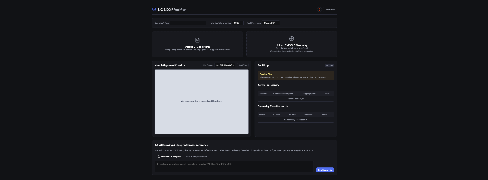

NC Verifier User Guide
Auditing G-Code Coordinates and Tool Parameters Against Manufacturing Drawings

Figure 1: NC Verifier Dashboard showing CAD vs G-Code coordinate alignment plot.
Overview
NC Verifier is a local, secure helper application designed to audit your G-code programs. It matches canned drilling/tapping cycles against DXF CAD files and compares tools, feeds, speeds, and hole locations against PDF blueprints using Gemini AI.
Step-by-Step Workflow
1. Upload Your NC Programs
CNC jobs are often split into separate programs (e.g. drilling, tapping, chamfering) due to memory constraints or static tool library configurations.
Select multiple G-code files at once and drag them into the G-Code upload zone. The parser combines them, maintaining tool logs and coordinate tracking across files.
2. Align Geometry (Optional)
- With DXF: Drag your
.dxf CAD file onto the DXF upload zone. The application runs a proximity check within your configured tolerance (default 0.005") and maps coordinates instantly on the canvas.
- Without DXF (G-Code Only): If you do not have a DXF file, you can skip this step. The app will enter G-Code Only mode, rendering the active coordinates and tool library from your programs so you can visually verify patterns and run AI audits.
Plot Color Guide
Green Outline: Matched CAD feature. Coordinates in G-code match a circle in the DXF file.
Cyan Target (Inner): The parsed G-code drilling coordinate hit.
Red Outline / Cross: Missed CAD feature. A circle exists in the DXF but was not found in G-code.
Orange Target / Crosshair: Stray G-code drill location. G-code coordinates have no matching circle in the DXF file.
3. Run AI Drawing Analysis
- Paste your Gemini API key in the top configuration bar (stored locally and securely in your browser's
localStorage).
- Upload the customer's blueprint PDF drawing in the bottom section.
- Click Run AI Analysis.
- Gemini will read the PDF blueprint, identify what features your loaded G-code programs are targeting (e.g. mapping T1 to M24 holes), check drill sizes/speeds/feeds, and output a detailed audit report.
- Click Export Report (.md) to save the AI report to your computer as a Markdown file.
Mathematical Tapping Audits
For any tapping tools or cycles (G84), the application calculates the programmed pitch and checks it against standard UNC/UNF sizes:
- For feed-per-minute mode (
G94): Pitch = Feed Rate / Spindle RPM.
- For feed-per-revolution mode (
G95): Pitch = Feed Rate.
- Threads-Per-Inch (TPI) is calculated as:
TPI = 1 / Pitch.
If the calculated pitch doesn't align with standard thread rules (e.g. 13 TPI for 1/2-13, 16 TPI for 3/8-16), a warning is flagged in the Active Tool table.